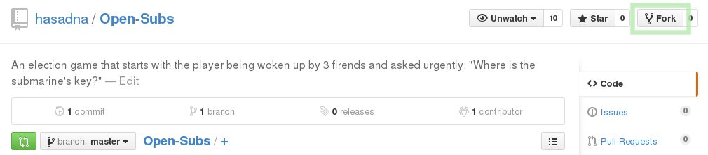

TL;DR : Open Subs repository
The Open Subs code is hosted on GitHub, and uses git for distributed version control.
If not done already, goto the github’s sign up, and create a user account.
Once done, login.
Forking the project creates your personal repository of the source code. Goto to the Open Subs repository and fork the project.
